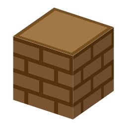

説明
①子ども 炉の横に置いて踏むと、風を送って火を熱くする。
②学生 素手で右クリックするたびに約1秒ぶんの風。横で水車が回っていれば、水車ふいごになってずっと風を送る。塊鉄炉・高炉の横に置く。
③大人 風で酸素をたくさん送ると、木炭がよく燃えて約1200〜1300℃になる。ふつうのたき火（約800℃）では鉄はとれない。エジプトのレクミラの墓の壁画（紀元前1450年ごろ）には、足で踏むふいごが描かれている。
④ガチ 西暦31年、中国・後漢の杜詩は水車でふいごを動かした。日本のたたら製鉄の「たたら（踏鞴）」は、もともと足で踏む大きなふいごの名前。